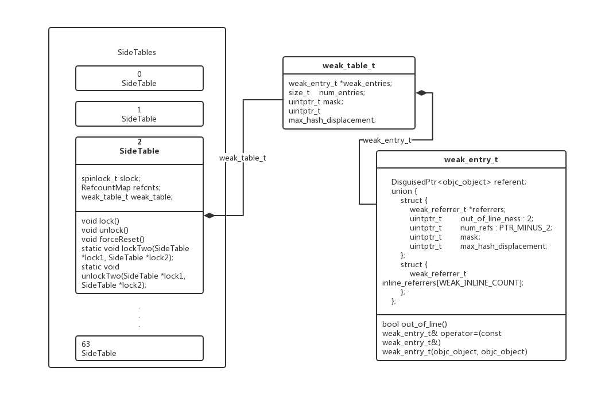

weak 如何实现
这里涉及到了weak_table_t weak表的数据结构及实现原理,weak_entry_t是一个表的一个入口, 在全局的弱引用表中使用了不确定的类型作为key, 使用weak_entry_t作为value, 不是一个简单的引用计数, 这个引用计数可能只是weak_entry_t类型中的其中某个属性的存在.
struct weak_table_t {
// 保存了所有指向指定对象的 weak 指针
weak_entry_t *weak_entries;
// 存储空间
size_t num_entries;
// 参与判断引用计数辅助量
uintptr_t mask;
// hash key 最大偏移值
uintptr_t max_hash_displacement;
};
weak_entry_t 是用来存储weak对象指针类型的类型
typedef DisguisedPtr<objc_object *> weak_referrer_t;
struct weak_entry_t {
DisguisedPtr<objc_object> referent;
union {
struct {
weak_referrer_t *referrers;
uintptr_t out_of_line : 1;
uintptr_t num_refs : PTR_MINUS_1;
uintptr_t mask;
uintptr_t max_hash_displacement;
};
struct {
// out_of_line=0 is LSB of one of these (don't care which)
weak_referrer_t inline_referrers[WEAK_INLINE_COUNT];
};
}

访问 __weak 修饰的变量，是否已经被注册在了 @autoreleasePool 中？为什么？
添加在autoreleasePool中了,如果没有添加到autoreleasePool中就会被立即释放了,为了延长声明周期所以添加在了autoreleasePool中.
在objc_loadWeak可以找到
objc_loadWeak(id *location) {
if (!*location) return nil;
return objc_autorelease(objc_loadWeakRetained(location));
}